De investigación Problema 279 Sea ABC un triángulo y P un punto arbitrario en su plano donde se cortan las cevianas AA´, BB´y CC´, donde A´está en BC, B´ en CA y C´ en AB. Definimos los siguientes pares de puntos : B1C1; A2C2; A3B3; tales que B1,A2 están en AB, C2,B3 están en BC, A3,C1 están en CA, y verificando que B´B1 //CC´, C´C1//BB´, A´A2//CC´, C´C2//AA´, A´A3//BB´, y B´B3//AA´ Definimos los puntos P1 intersección de las rectas B´B1 y C´C1, P2 intersección de las rectas A´A2 y C´C2, P3 intersección de las rectas A´A3 y B'B3. P* como intersección de las tres rectas A´P1, B´P2 y C´P3, que le podemos llamar como el punto conjugado de P respecto al triángulo ABC. Demostrar que : a) El triángulo P1P2P3 es semejante al triángulo A´B´C´, indicando las características de la transformación geométrica que lo produce. b) Probar que el punto P* es el baricentro de cada uno de los pares de puntos P1, A´ , P2, B´, P3C´, respectivamente. c) ¿Qué pasaría con el enunciado anterior y sus conclusiones (a), (b), si P fuera un punto notable del triángulo, baricentro, G, circuncentro, O, incentro, I, u ortocentro H. d) Hallar todos los puntos del plano del triángulo ABC, tales que P= P*. e) Hallar en cada uno de los casos el lugar geométrico de los puntos del plano del triángulo tales que : e1) El triángulo A´B´C´ sea semejante al triángulo ABC, e2) Los triángulos AC´B´, BA´C´, y CB´A´ sean semejantes al triangulo ABC, e3) Los tres triángulos anteriores junto con A´B´C´ sean semejantes al triángulo ABC.
Solución de José María Pedret, Ingeniero Naval. Esplugues de Llobregat (Barcelona). (1 de noviembre de 2005) |
|
SOLUCIÓN |
|
APARTADO (a)
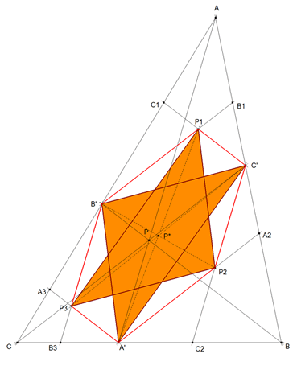 figura 1
|
|
APARTADO (b)
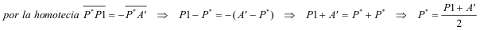 |
|
|
APARTADO (c)
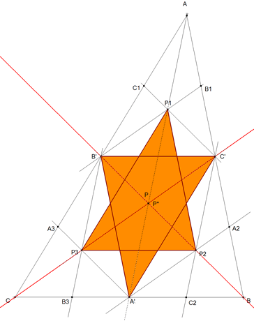 figura 2 c - baricentro G
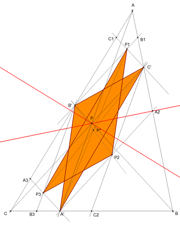 figura 3
c - circuncentro
Se conserva la misma transformación que en el caso (a). En esta ocasión, yo no distingo ninguna característica especial.
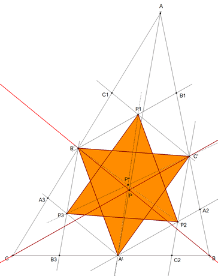 figura 4 c - incentro Se conserva la misma transformación que en el caso (a). En esta ocasión, las cevianas son las bisectrices.
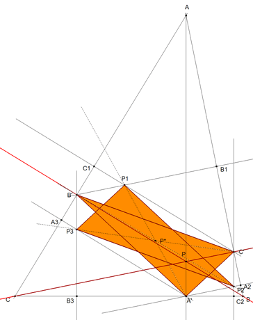 figura 5 c- ortocentro
|
|
APARTADO (d)
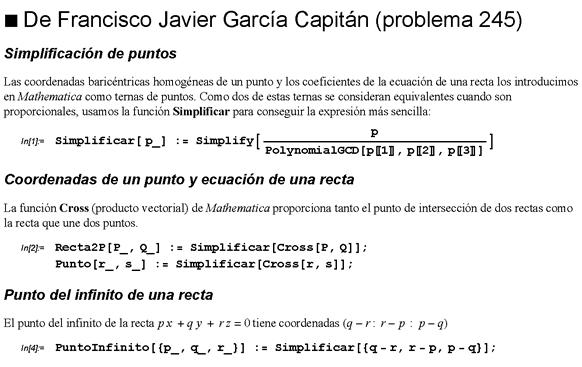 figura 6
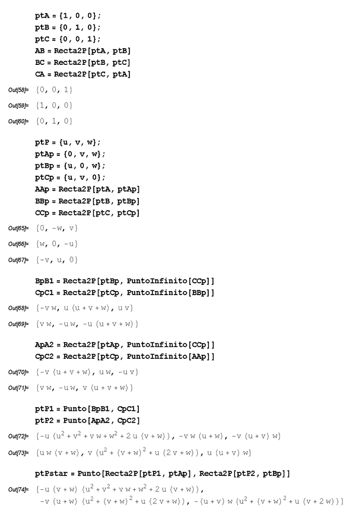 figura 7
Si P coincide con P*, sus coordenadas son proporcionales y de aquí
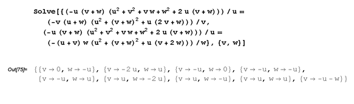 figura 8 d - primera y tercera solución
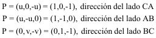 Si P recorre un lado del triángulo P*, recorre ese lado del triángulo. P y P* coincidirán en el punto medio de los lados. d - segunda y sexta solución
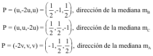 Si P recorre una mediana del triángulo, P* recorre esa mediana del triángulo. P y P* coincidirán cuando se encuentren sobre dos medianas a la vez; es decir, cuando P sea el baricentro como se vio en el apartado C. Veamos más puntos sobre las medianas en el siguiente párrafo.
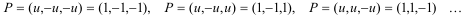 Es decir son los puntos
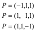 que son los simétricos de cada vértice respecto el punto medio del lado opuesto. Estos puntos también están sobre las medianas. d - octava solución
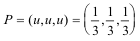 Que es el baricentro como ya sabíamos. d - novena solución
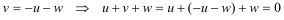
|
|
APARTADO (e) subapartados e1 y e3 Se supone que se sabe resolver el siguiente problema:
“ En un triángulo dado, inscribir otro triángulo que sea semejante a un triángulo dado y que tenga uno de sus vértices en un punto dado de un lado del primero.”
Julius Petersen. Problema 352
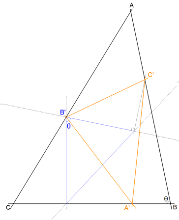 figura 9 Tomamos un punto cualquiera B’ sobre CA. Con un vértice en B’ dibujamos un triángulo cualquiera semejante a ABC. Por ejemplo fijamos por B’ una recta vertical y por su intersección con BC trazamos una recta que forme con la anterior un ángulo igual a BAC; y por B’ otra recta que forme con la vertical inicial un ángulo ABC. Obtenemos el triángulo azul.
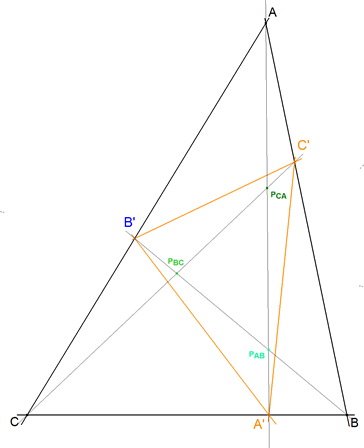 figura 10
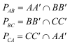
Resumiendo
El lugar de PAB cuando B’ recorre CA es una cónica por A, B, PAB ... El lugar de PBC cuando B’ recorre CA es una cónica por B, C, PBC ... El lugar de PCA cuando B’ recorre CA es una cónica por C, A, PCA ...
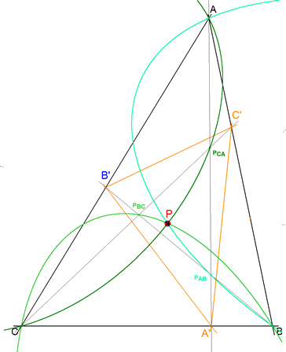 figura 11 Estas tres cónicas (elipses en este caso) coinciden en un único punto. Este punto de coincidencia ÚNICO es el BARICENTRO como ya habíamos visto.
subapartados e2
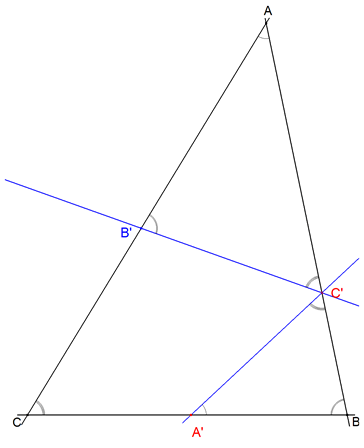 figura 12 Tomamos un punto B’ cualquiera sobre CA. Por B’ trazamos una recta que forme con CA un ángulo igual a B. Esta recta corta a AB en C’.
Por C’ trazamos una recta que forma con AB un ángulo igual a C. Esta recta corta a BC en A’. B’C’ y A’C’ forman el mismo ángulo con AB y por lo tanto la perpendicular a AB por C’ es su bisectriz. Podemos usar el mismo razonamiento para los otros puntos A’ y C’. Resumiendo. Para que los triángulos mencionados sean semejantes a ABC, debe ser:
C’A’ y A’B’ tendrán por bisectriz a la perpendicular a BC por A’ A’B’ y B’C’ tendrán por bisectriz a la perpendicular a CA por B’ B’C? y C’A’ tendrán por bisectriz a la perpendicular a AB por C’ Pero esto, como hemos visto varias veces en estas páginas de RICARDO BARROSO, sólo ocurre cuando A’B’C’ es el triángulo órtico de ABC.
|